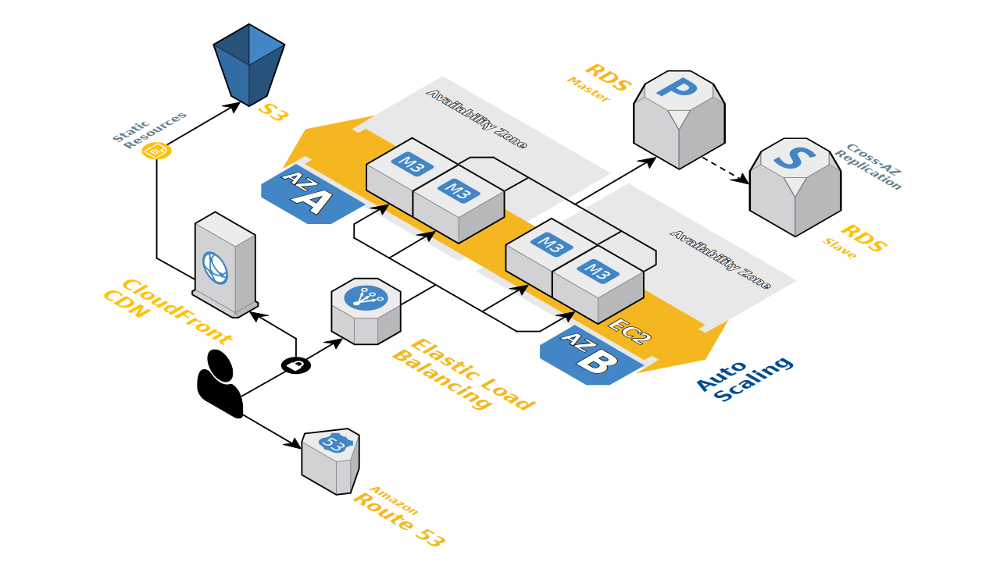

Custom solutions architecting made to fit your business’ unique needs. Specializing in Cloud native and multi-cloud solutions.
Our Strata
Root-Dynamics offers consulting on creating Cloud Solutions tailored to your business’ needs. With an approach backed by Site Reliability Engineering fundamentals and a cost-centric focus, we provide best in class solutions.
Core Competencies
The public cloud and it’s associated problem space are vast, to give an idea of what we can offer your business here are some brief points of interest.
Design
As with many things, system design doesn’t have a one size fits all solution.
Therefore, using a data driven design we will find the model that fits your business and design a system around it.
- Event Driven
- Streaming
- Micro services
- Serverless
Cloud First
We transform your approach to cloud solutioning by leveraging our certifications and expertise with the following cloud providers and technologies:
- Amazon Web Services (AWS)
- Microsoft Azure
- Google Cloud Platform (GCP)
- Kubernetes
- Hashicorp
- Vault
- Terraform
- Consul
- Nomad
Automation
CI/CD
|
|
We have a vast wealth of knowledge from operating numerous CI systems; Jenkins, Gitlab CI, Github Actions, Travis, CircleCI.
Using our experience and lessons learned we can revamp and optimize your CI systems too.
More performant pipelines will give your organization increased speed and output.
Infrastructure As Code
|
|
Infrastructure as Code is the way of the future. Codifying your cloud resources will lead to reproducible deployments, and completely automated provisioning of your cloud infrastructure.